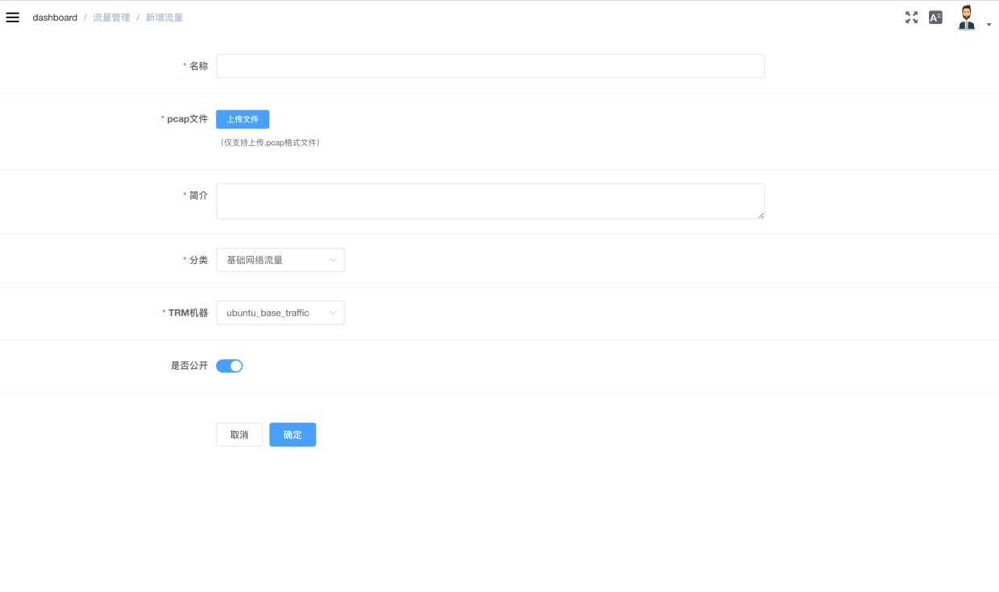
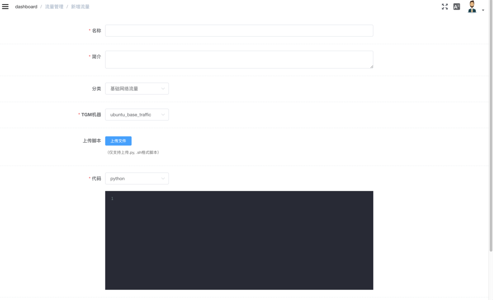

流量
- 背景流量
- 智能流量
背景流量
系统在TRM上使用Tcpreplay来重放你在网络上捕获的流量或现有的流量包
录制流量
- Wireshark
- Tcpdump
tcpdump -i eth0 -w example.pcap -s 0
-i #是指定要抓取的网卡
-w #指定结果保存的位置
TRM准备
前提：ubuntu/centos(docker)，python2， agent-server
待安装：tcpreplay，netifaces
# 安装tcpreplay
# ubuntu:
apt-get install tcpreplay
# centos:
yum install epel-release
yum install tcpreplay
# 安装netifaces
pip install netifaces
新增背景流量
-
在TRM管理中，新建流量重放机器
-
新增背景流量

**说明：**
- **只支持上传.pcap后缀的流量包**，选定TRM后完成流量的上传
- 若无“类型”，请返回列表页面，新建类型
智能流量
系统在TGM上执行自定义脚本生成动态流量
新增智能流量
-
在TRM管理中，新建流量发生机器
-
新增智能流量

脚本可以是python或shell脚本
- python
python脚本的入口函数名必须为traffic，默认参数ip是场景实例启动后目标靶机的ip，其他参数可以在场景编排时，动态添加。以ping命令产生的流量为例，可以像这样来写一个简单的python流量脚本:
import threading
import subprocess
def execute_command(command):
process = subprocess.Popen(command, stdin=subprocess.PIPE, stdout=subprocess.PIPE, shell=True)
def traffic(ip=None, **kwargs):
times = kwargs.get('times') if kwargs.get('times') else '20'
command = "ping %s -c %s" % (ip, str(times))
execute_command(command)
return command
- shell
shell脚本的第一个参数默认为场景实例启动后目标靶机的ip，其他参数可以在场景编排时，动态添加。以ping命令产生的流量为例，可以像这样来写一个简单的shell流量脚本:
ping $1 -c 100
选定TGM，完成智能流添加